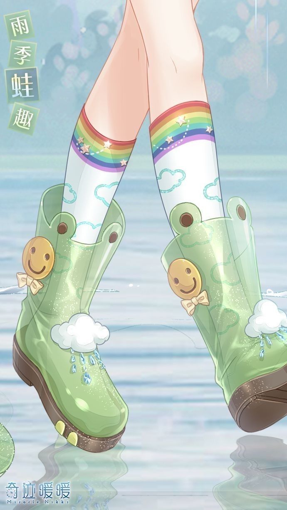

Character Design · 3D
Freya
Freya is the heart of The Magic Forest — a little girl who finds herself lost in a deep, dark wood. Her grief feels endless until a strangely familiar firefly teaches her to see colour and light even in the darkest places. I designed and built her from the first pencil sketch to a finished, animation-ready 3D character.

From reference
to form
Freya began on paper. Before touching a 3D tool I gathered references and drew her from several angles to lock in proportions, silhouette and the quiet sadness she carries at the start of the story.
Those drawings became the blueprint for the model — used as image planes in Blender so the sculpt stayed true to the original character, from the shape of her face to the details of her shoes.
- Hand-drawn turnaround & expression references
- Block-out and clean topology built for deformation
- Modelled to be rigged and animated later in the film


